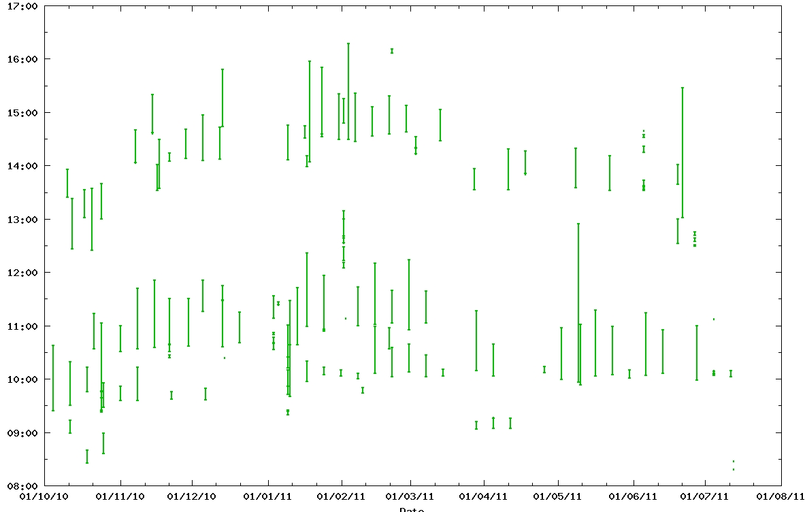

Plotting Calendar Data with GNUplot
Originators/Authors
James S Perrin
AGtivity: University of Manchester,
Purpose
To display multiple discrete events which have a start and end time, such as meetings, in a
diary/calendar like plot.
Background
The Access Grid activity data quite literally describes what a group of people were doing at
discrete periods of time i.e. have an Access Grid meetings. It is therefore of benefit to present this
data in a calendar or diary format to describe when the activities at virtual venue or physical node
were occurring. We could look at room booking data but this only shows what was proposed to
happen, meetings occur ad- hoc or cancelled without updating the system. The diary format allows
trends and patterns in actual room usage to be observed. We could go further and use cyclic plots
to compare activity on a week by week basis say.
Ingredients
- GNUplot
- Some data for events with start and end times
Assumptions
We assume that each event occurs within one day ie starts after 00:00 and finishes before 24:00
the same day (we can clamp the data if necessary). The timestamps should be give the time and
date, UNIX timestamps (seconds since UNIX Epoch) are most easy to handle.
The user is already familiar with basic GNUplot commands and usage.
Warnings
GNUplot has its own epoch value and Excel using a floating point number for timestamps.
Method
- Define some new flat ended arrow styles in GNUplot
- Set up the data formats and axes to handle the time stamps correctly
- Plot data ‘with vectors’
Individual Steps
Set Arrow Styles
We want to use flat headed arrows to show the extent of each event.
- unset style arrow
- set style arrow 1 heads back nofilled linetype 2 linewidth 2.000 size screen 0.001,90.000,90.000
Set Time Format and Axes
Tell GNUplot that time will be plotted on both X and Y axes:
- set xdata time
- set ydata time
and let it know that the value will be in UNIX time:
- set timefmt x “%s”
- set timefmt y “%s”
Then tell GNUplot how to format the axes, the date along the X and time along the Y axis:
- set format x "% g"
- set format y "%H:%M"
of course we should label the axes too:
- set xlabel “Date”
- set ylabel “Time”
Manipulating and Plotting the Data
Let’s assume the start and end times are in columns 1 and 2.
Multiple events occurring on the same day should be vertically aligned ie plotted at whole days
rather than at a day plus seven hours and fourteen minutes. The x values are therefore rounded
down using the following expression:
(floor($1)/86400)*86400)
Where 86400 is the number of seconds in day. The floor() function is used as a belt and braces
approach to convert the (by default) float value into an integer. Along the Y axis we just need the
time of day, using the modulus operator and the seconds per day we get the remainder:
(floor($1)%86400))
GNUplot vectors use a start point and a relative offset (x,y,dx,dy) so all we need to compute the
duration of the event is:
($2-$1)
Putting these expressions altogether in the plot command as follows:
plot mydata.csv using ((floor($1)/86400)*86400):(floor($1)%86400):(0):($2-$1) with vectors as 1
The data is plotted with vectors using the arrowstyle (as) 1 that was defined earlier.
Output Data

Resources
The batch_timetable.plt GNUplot script is available as part of our log parsing package: